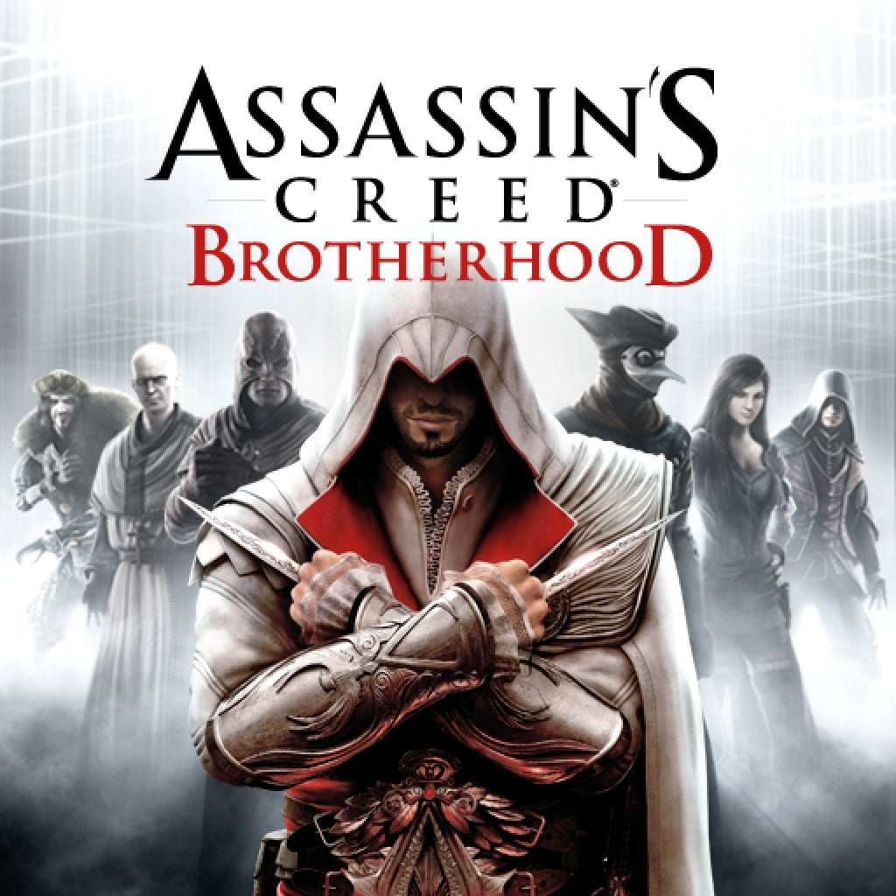

🎮
I due giochi che mi piacciono di più

Assassin's Creed Brotherhood
✖
Assassin's Creed Brotherhood è un videogioco del 2010 sviluppato da Ubisoft.
Segue la storia di Ezio Auditore, uno dei personaggi più amati della saga.
Il gioco è ambientato principalmente a Roma, una città enorme e piena di vita,
dove Ezio deve ricostruire la Confraternita degli Assassini e combattere
contro il potere dei Borgia.
Il titolo introduce una delle novità più apprezzate della serie:
la possibilità di reclutare e addestrare nuovi Assassini, che possono
essere inviati in missione o chiamati in aiuto durante i combattimenti.
Brotherhood è considerato uno dei capitoli migliori della saga grazie
alla sua atmosfera, alla storia coinvolgente e alle tante attività
secondarie che rendono Roma un mondo vivo e ricco di dettagli.

Minecraft
✖
Minecraft è un videogioco sandbox creato da Markus Persson nel 2009.
È uno dei giochi più popolari al mondo grazie alla sua libertà totale:
puoi costruire, esplorare, combattere, creare macchine, villaggi,
mondi enormi e persino server multiplayer.
Il mondo è composto da blocchi generati proceduralmente, quindi ogni
partita è diversa. Puoi giocare in modalità Sopravvivenza, dove devi
raccogliere risorse e difenderti dai mostri, oppure in Creativa, dove
hai blocchi infiniti e puoi costruire tutto ciò che vuoi.
Minecraft è diventato un fenomeno culturale grazie alla sua semplicità,
alla creatività infinita e alla community gigantesca che crea mod,
texture pack, mappe e server personalizzati.